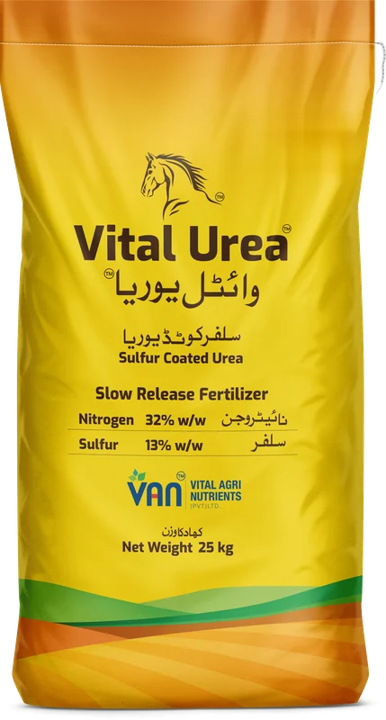

24 brands · 22 PSQCA licences for our own brands
Every product is designed for soil that binds or loses nutrients before the crop can take them up.
A crop needs 17 essential nutrients. Plain urea supplies only nitrogen. More nitrogen does not make up for a shortage of another nutrient. Our 24 brands cover 7 families of products.
Browse our 24 brandsHave us make a product under your brand
The Punjab soil testing programme tested 770,160 soil samples in about 2016 to 2018. Of these samples, 69.1% had a pH above 8. Above pH 8, part of the nitrogen from urea left on the soil surface is lost to the air as ammonia. In calcareous soil, free calcium binds most of the phosphate applied as fertiliser before the roots can take it up.
The 22 licences are from the Pakistan Standards and Quality Control Authority (PSQCA). The licence count is as of July 2026. The brand count is as of November 2026.
Vital Urea · N 32% min · S 13% min
Urea core, sulfur coating
The coating reduces how much nitrogen is exposed to volatilisation at any one time. The coating does not stop volatilisation.
In the soil, bacteria oxidise the elemental sulfur to sulfate. Sulfate is the form of sulfur that roots take up.
See the Vital Urea granule in the soilGreen Phosphate · N 6% · P₂O₅ 32%
Acidic phosphate core, humic coating
Green Phosphate is granulated in an acidic mix and coated with humic material.
The soil around each Green Phosphate granule is acidic at first. This acidic zone is a few centimetres wide.
See the Green Phosphate granule in the soilVital Potash · N 11% · K₂O 44%
Boron coating in 2 forms
Each granule carries boron in 2 forms. Sodium borate releases boron quickly. Calcium borate releases boron slowly.
See how Vital Potash is appliedOur brands
Choose how you apply fertiliser to see our brands made for that method. Open a card to see the declared analysis by nutrient, the crop stages and the pack sizes.
Showing 24 of 24 brands.
No brand matches both filters.
Nitrogen, phosphate and potash in the soil
The drawing shows 1 soil cross-section and covers 3 nutrients. Choose a nutrient. Then switch between the problem with that nutrient in the soil and our product for it.
The number of dots and the speed of each change are not measurements.
Nitrogen · problem 1 of 3
Nitrogen lost to the air and to water
In soil with a pH above 8, part of the nitrogen from urea left on the soil surface is lost to the air as ammonia before the crop can use it.
Irrigation water also carries nitrate down below the roots. The nitrogen in that nitrate is lost to water.

Our product for this problemVital UreaOpen the live page for Vital UreaCheck the lab report for your bag by its batch number
We test every batch before it leaves the plant. The Verify page of van.com.pk opens the approved lab report for a batch from the batch number printed on the bag. The check is free. You do not need to send a sample.
Accreditation
The Pakistan National Accreditation Council (PNAC) has accredited our quality control laboratory to ISO/IEC 17025:2017, under accreditation number LAB 336. The accreditation covers 8 of the laboratory’s 21 fertiliser tests.
Blind testing
To have one of our products tested blind, send 500 g of it to Sample Reception and book a normal paid test. Sample Reception works from a building separate from our laboratory. The sample is given a code in place of the product name. The analysts therefore do not know that the sample is our product.
How blind testing worksOrder direct from the plant
Tell us the product, the pack size, the quantity and your district. We reply with price, availability and delivery.
- 1Pick the product and the pack size
- 2Send the quantity and your district on WhatsApp
- 3We confirm price, availability and delivery
Phone
+92 42 35762215Dealers
You can buy our products at 9 places in 7 towns. The 9 places are 7 independent dealers and 2 shops that we own.
Where to buy